TL;DR
Gymnastics Victoria has named its 2026 WAG State Team and Queensland Border Challenge Team. When you run the numbers through our database, YMCA Geelong leads all clubs with eight selections across both squads, while MAGA places seven athletes who have settled into their new home after the upheaval of Funtastic's closure. Skylar Poliquit improved by more than three points from trials to Senior Vics to win her session; Ella McGrath completed only bars at Trial 1 before posting 48.766 at championships; and Edwina Cross finished second at both Level 7 Border Challenge trials within 0.368 of a point.
As a gymnastics dad, our family conversations have a way of circling back to the same question: what does it actually take to make a state team? My daughter is working her way through the lower levels, and representing Victoria feels like a distant dream right now, but I find myself increasingly curious about the athletes who are already there, and fascinated by the data behind those decisions.
When Gymnastics Victoria released the 2026 State Team and Queensland Border Challenge Team this week, I went straight to the Stick The Landing database. We have results from both 2026 selection events and the Senior Victorian Championships. What does the data actually tell us about how these selections were made?
How selection works
I asked around some of the coaches I have gotten to know, and they were kind enough to walk me through the process.
For Level 8 and above, selection comes down to points accumulated across two events: one trial competition and the Senior Victorian Championships. On each apparatus, the top-ten finishers earn points, 20 for first, 18 for second, 16 for third, and so on down to 2 for tenth. The all-around ranking also earns points: 10 for first, 9 for second, down to 1 for tenth. Those points add up across both events, and the highest totals generally indicate who should be selected, though the selection committee has the final say.
The apparatus weighting is significant. A gymnast who consistently places in the top three on vault or bars can accumulate selection points even if her all-around total isn't the highest in the room. This is intentional, as Gymnastics Victoria's goal is to maximise the team score at nationals, not just to send whoever has the best overall number.
For Level 7 Border Challenge, the process is the same but uses two trial events rather than a trial plus championships, as Level 7 athletes don't compete at Senior Victorian Championships.
There is also a selectors' discretion element. If an athlete finishes marginally lower in the points but is genuinely exceptional on one apparatus, or has demonstrated across the season what they're capable of on a good day, the selection committee can choose them over the athlete who scored slightly higher on paper. One coach put it best:
"I like to call it the Simone Biles rule. If she had the most horrendous day at trials and came dead last, you still put her on the Olympic team because you know what she's capable of."
Level 10 operates differently: athletes need to hit a qualifying score at any competition during the year to enter the squad, with the final team places determined after state team training camp.
The 2026 State Team
Level 8 Open
Eight athletes will represent Victoria at the Australian Gymnastics Championships in Level 8 Open. The squad draws from six clubs, with MLC the only club to land two spots.
Jets Gymnastics
Sophie Strano (Jets Gymnastics) led the field at Trial 2 with 47.332, posting a vault of 13.0 and floor of 12.133, form that would have made a strong case for selection going into the championships. She finished 7th at Senior Vics (46.166), still a very solid score, and the combination across both events likely put her well inside the selection points.
Waverley Gymnastics Centre
Celine Wawolangi (Waverley Gymnastics Centre) was second at Trial 2 with 47.032, one of the most consistent Level 8 performers in the state this season. She finished 5th at Senior Vics at 46.850, a remarkably stable spread across both events (beam 12.366 at Trial 2 and floor consistently above 11.9).
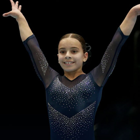
Niddrie Gymnastics
Elisha Spiteri (Niddrie Gymnastics) is one of the most dangerous vaulters in the Level 8 field. She posted 13.166 on vault at Trial 2 and 13.300 at Senior Vics, scores that would have generated significant selection points on that apparatus alone. She finished 4th at Trial 2 (46.199) and 4th at Senior Vics (46.950). A strong case for selection across both events.
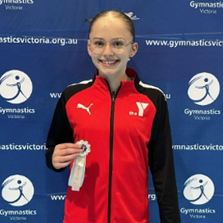
YMCA Geelong Gymnastics Club
Laura Bardon (YMCA Geelong Gymnastics Club) came into Senior Vics and delivered a 6th-place finish at 46.650, with beam 12.2 and floor 11.3 among her stronger contributions. A balanced all-around gymnast whose championship form would have helped build her selection points.
MLC Gymnastics
Lexi Wise (MLC Gymnastics) rose from 6th at Trial 2 (45.798) to 3rd at Senior Vics (47.116). Her bars at the championships, 12.550, was one of the better uneven bars scores in the Level 8 Open field all season. That kind of apparatus strength on a selection event would have counted heavily.
MLC Gymnastics
Morgan Ferguson (MLC Gymnastics) posted 45.599 at Trial 2, with bars of 12.600, one of the standout bars scores of that event. Victoria goes to nationals with two MLC gymnasts who are both exceptional bar workers, which is a meaningful asset in a team competition that rewards apparatus depth.
Wyndham City Gymnastics
Chloe Hume (Wyndham City Gymnastics) moved through the season steadily. She was 5th at Trial 2 (45.899) and pushed up to 2nd at Senior Vics (47.183), with vault 13.033 her headline score at the championships. The improvement from trials to vics would have added points on both events to her selection tally.
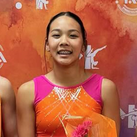
Melbourne Acrobatic Gymnastics Academy
Skylar Poliquit (Melbourne Acrobatic Gymnastics Academy) is perhaps the most striking selection data story in Level 8. A former Funtastic Gymnastics athlete, she is one of several gymnasts who found a new home at MAGA after that club's sudden closure in late 2025. She finished 10th at Trial 2 with 44.899, a score that placed her outside the top-half of points earners. Then she came to Senior Vics and won her session outright at 47.950, a 3.051-point improvement. Bars 12.050 and beam 12.200 were her standout contributions on the day. Her selection is a strong example of how a dominant championship performance can shift the ledger significantly.
"Gymnastics Victoria's goal is always to maximise the team score while also trying to achieve individual medals, but the team doing well is what they prioritise most."
Level 8 Open Reserves (non-travelling): Three reserves were named, Aleila Brand-Starkey (BTYC Gymnastics), Arabelle Ng (BTYC Gymnastics), and Tiffany Clarke (MYC Gymnastics), all three of whom are also in the Level 8 Border Challenge White squad, meaning they're competing at Border Challenge regardless.
Level 9 Open
Eight athletes earn Level 9 Open representation, with Waverley placing two and six other clubs represented. Based on our data, Level 9 selection appears to have used Trial 1 (April) and Senior Victorian Championships as the two counting events.
Waverley Gymnastics Centre
Madison Marburg (Waverley Gymnastics Centre) was the standout performer at Trial 1, winning her session with 48.800, vault 13.1, floor 12.7. Those are the kind of scores that generate maximum apparatus points. A likely lock for selection before Senior Vics even started.
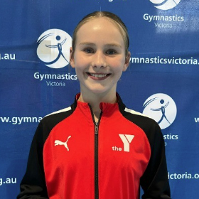
YMCA Geelong Gymnastics Club
Milly Vanderklift (YMCA Geelong Gymnastics Club) was second at Trial 1 with 48.116, posting bars of 11.55 and floor of 12.0. She finished 9th at Senior Vics (46.016), a day that wasn't her best, but her dominant trial performance would have given her a healthy points buffer heading into the championships.
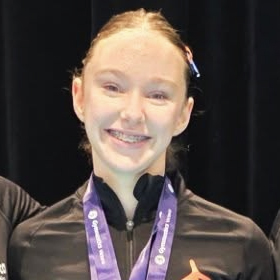
Athleta Gymnastics
Ella McGrath (Athleta Gymnastics) has one of the most interesting data profiles in the selection cohort. At Trial 1 she completed only bars, recording a score of 12.900 and finishing 18th on that partial result. The selection committee would have had to assess what that means for her total points, and apparently concluded she was worth including. At Senior Vics she answered emphatically: 3rd in her session with 48.766, including bars 12.900, vault 12.333, beam 11.900. If selectors backed their read on her potential, the championships justified it.
Jessica Terry (Melbourne Gymnastics Centre) was 3rd at Trial 1 (47.300) and improved to 2nd at Senior Vics (48.849), vault 13.1 and beam 12.35. A consistent presence across both events who would have accumulated solid points on multiple apparatus.
Anna Yung (Waverley Gymnastics Centre) brings elite vault to the team, with 13.233 at Senior Vics one of the best vault scores in the Level 9 field across the whole season. She was 4th at Trial 1 (46.149) and 5th at Senior Vics (47.949), a steady contributor across the board.
Zali Goulding (CYC Gymsports) is another vault specialist, posting 13.0 on vault at Trial 1, the equal-best vault score of that event. She was 5th at Trial 1 (45.116) and 10th at Senior Vics (45.916). Floor 10.9 at trial suggests there's room for the team to improve on that apparatus elsewhere, but her vault contribution is a strong asset.
Leah Boulos (BTYC Gymnastics) was 7th at Trial 1 (44.816) but delivered one of the bigger improvements at Senior Vics, finishing 4th at 48.349, vault 12.933, bars 11.966. A 3.5-point jump from Trial to championships would have shifted her points total considerably.
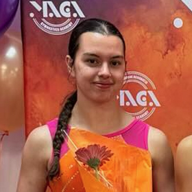
Melbourne Acrobatic Gymnastics Academy
Shae O'Brien (Melbourne Acrobatic Gymnastics Academy) has the most dramatic data arc of anyone in the Level 9 field. At Trial 1 she scored 43.133 and placed 10th, with bars recorded at 6.65 on the day, which dragged her total down significantly. At Senior Vics she won her session outright with 49.282, including vault 13.466 and beam 12.250. That 6.15-point swing from Trial to championships is the biggest improvement in any selection cohort this season. It speaks to a selection committee that could see the potential, and the championships result more than justified the call.
Level 9 Open Reserves: Amanda Yung (Waverley Gymnastics Centre), Eloise Murphy (Eureka Gymnastics), and Nicole Muscroft (BTYC Gymnastics), notably all three are also named in the Level 9 Border Challenge White squad.
Level 8 Under
Five athletes have been named in the Level 8 Under squad for nationals. The Under category is an age-based division within Level 8, meaning these athletes compete at the same level as the Open group but earn their own separate national representation. The selection trial for this group was Trial 2 (March), with Senior Vics as the second counting event.
MLC Gymnastics
Emma Hale (MLC Gymnastics) led the Level 8 Under division at Trial 2 with 47.265, posting bars of 13.033, the best bars score of that trial event across all Level 8 divisions. She finished 3rd at Senior Vics (44.533). The trial result in particular suggests she would have earned maximum points on bars at that event.
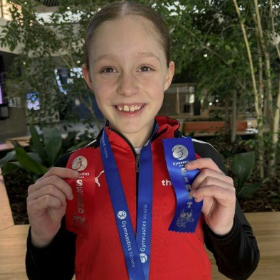
YMCA Geelong Gymnastics Club
Ivy Alford (YMCA Geelong Gymnastics Club) was 2nd at Trial 2 (46.832) and rose to win her session at Senior Vics with 47.816, beam 12.3 and floor 11.85. The progression from second to first across the two selection events is a tidy story of form arriving at the right moment.
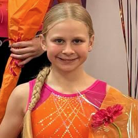
Melbourne Acrobatic Gymnastics Academy
Isla Bellamy (Melbourne Acrobatic Gymnastics Academy) was 3rd at Trial 2 (45.231) and 5th at Senior Vics (41.516). The trial performance in particular, vault 12.233 and bars 10.766, suggests she would have contributed solid points at that event. One of three MAGA athletes across the state team squads (more on that below).
Alexia O'Brien (MYC Gymnastics) was 4th at Trial 2 (42.565), with consistent contributions across all four apparatus, with bars 11.433 her standout event at that competition.
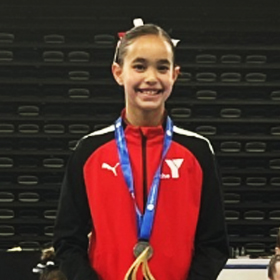
YMCA Geelong Gymnastics Club
Ailani Songsaeng (YMCA Geelong Gymnastics Club) was 5th at Trial 2 (41.099) and rose to 2nd at Senior Vics (44.966), a significant improvement, particularly on beam (12.2) and floor (11.1) at the championships. Another athlete whose trajectory across the selection window will have strengthened her case.
Level 9 Under
Five athletes in the Level 9 Under squad complete Victoria's nationals contingent for the younger age category. This group competed in the Under sessions at Trial 1 and Senior Vics.
Estelle Warnes (Chamford Gymnastics Club) is one of those athletes who makes the selection committee's job easy. She has not lost a competition in 2026: Trial 1 winner (48.799), and winner of her session at Senior Vics (49.633). Those scores across both selection events would have generated near-maximum points at every turn. The all-around title at Senior Vics, the highest Level 9 score of the entire championships weekend, was simply confirmation of what the trial already showed.
Lexi Thomas (Chamford Gymnastics Club) was 3rd at Trial 1 (47.883) and 2nd at Senior Vics (47.848), with beam 12.7 at Trial 1 one of her best individual apparatus scores. Chamford sends two athletes to nationals in the Level 9 Under squad, a remarkable result from a single club.
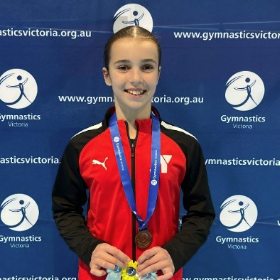
YMCA Geelong Gymnastics Club
Aria Posterino (YMCA Geelong Gymnastics Club) was 2nd at Trial 1 with 47.900, posting bars of 12.75, one of the strongest bars scores in the Under division all season. She finished 4th at Senior Vics (46.366), with the two-event combination giving her a strong points tally.
Macie Johnson (MYC Gymnastics) was 4th at Trial 1 (46.066) with vault 12.533, a meaningful vault contribution on a selection event. She finished 3rd at Senior Vics (46.666), consistent across both counting competitions.
Chloe Chinnery (MYC Gymnastics) was 5th at Trial 1 (42.833). Vault 12.300 at Trial 1 means she likely earned points on that apparatus at the trial event. MYC sends two athletes in the Level 9 Under squad alongside two in other categories, another club with broad depth.
The Queensland Border Challenge Team
Gymnastics Victoria doesn't send just one army. While the State Team marches on the Australian Gymnastics Championships, a second contingent is heading north to Queensland to contest the Border Challenge. Three levels, White and Navy squads at each, and a roster full of athletes who went through the same selection fire as their state team counterparts. Two fronts. One state.
Level 7
Level 7 selection used two trial events, Trial 2 in March and Trial 1 in April. The top five by cumulative points form the White team; the next five form the Navy.
Three of the five White team spots go to MAGA athletes.
Melbourne Acrobatic Gymnastics Academy
Arianna Naidu (Melbourne Acrobatic Gymnastics Academy) led Trial 2 (47.199) and was 4th at Trial 1 (46.366), with vault as her strongest apparatus throughout the season. As we noted in our Trial 2 report, she edged Edwina Cross by just 0.034 points that day.
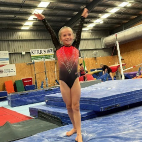
YMCA Geelong Gymnastics Club
Edwina Cross (YMCA Geelong) is the poster athlete for selection consistency. She finished 2nd at Trial 2 (47.165) and 2nd at Trial 1 (47.533), the same placing at both selection events, and within 0.368 points of herself. Beam has been her standout apparatus: 12.400 at Trial 2, 11.933 at Trial 1. With those cumulative points across both trials, her selection was the obvious call.
Gabriella Da Costa (Waverley Gymnastics Centre) had an interesting two-trial pattern. She was 11th at Trial 2 (43.999), not a result that would immediately stand out as a selection contender. But at Trial 1 she won the entire session with 47.982, including beam 12.933. That 4-point improvement, with the win landing on the second event, would likely have given her sufficient cumulative points.
Elena van Eijk (Melbourne Acrobatic Gymnastics Academy) showed a similar improvement: 12th at Trial 2 (43.900) and 3rd at Trial 1 (46.715). The trajectory across both trials would have added up in the selection maths. Vault 12.166 at Trial 1 was a notable contribution.
Indigo Gration (Melbourne Acrobatic Gymnastics Academy) was 4th at Trial 2 (46.231) and 8th at Trial 1 (45.250). Beam 11.9 at Trial 1. Consistent across both events, with enough points at Trial 2 in particular to justify her selection.
Navy team: Abigail Mecklem (Jets Gymnastics), Augustine Vieau (YMCA Geelong), Jeanne Kristen Canoy (MLC Gymnastics), Mia Bell (Chamford Gymnastics Club), Ruby De Sensi (Waverley Gymnastics Centre).
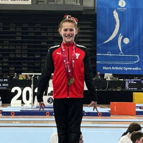
YMCA Geelong Gymnastics Club
Augustine Vieau (YMCA Geelong Gymnastics Club) was 10th at Trial 2 (44.298) and improved to 5th at Trial 1 (45.649), with bars 12.133 her best individual score at the April event. The improvement from trial to trial would have helped consolidate her position in the squad.
Jeanne Kristen Canoy (MLC Gymnastics) illustrates how the two-trial system can produce surprises. She was 3rd at Trial 2 (46.366) with floor 12.200, a result that would have earned significant points. But at Trial 1 she was 13th (44.749). The averaging across both events evidently kept her within the selection band.
Ruby De Sensi (Waverley Gymnastics Centre) had the mirror-image pattern: 8th at Trial 2 (44.899) and 24th at Trial 1 (42.716). When one trial goes well and the other doesn't, the cumulative points can still add up to a selection depending on where the rest of the field landed.
Mia Bell (Chamford Gymnastics Club) was 13th at Trial 2 but brought exceptional beam, with 12.566 at Trial 1 one of the highest beam scores in the Level 7 field across the season. The apparatus points system rewards exactly that kind of specialist contribution.
Abigail Mecklem (Jets Gymnastics) was 17th at Trial 2 (43.333) and 11th at Trial 1 (44.916). A steadier improvement across the two trials, with vault 12.0 at Trial 1 a solid contribution on that apparatus.
Level 7 Reserves:Isabella Morgan (Waverley Gymnastics Centre) and Layla Fairweather (Chamford Gymnastics Club). Morgan rose from 14th at Trial 2 (43.564) to 6th at Trial 1 (45.482), one of the stronger individual trial improvements in the Level 7 field, with beam 12.066 at the April event. Fairweather had the inverse pattern: 5th at Trial 2 (45.165, vault 11.833) but 15th at Trial 1 (44.366). Both are non-travelling reserves eligible to travel if needed.
Level 8
Level 8 athletes had one trial (Trial 2 in March) plus Senior Victorian Championships as their two selection counting events. The top six by cumulative points form the White team; the next six form the Navy.
Tiffany Clarke (MYC Gymnastics) was the standout Trial 2 performer in the White group, 3rd overall (46.465) with bars 12.533. She finished 21st at Senior Vics (43.250), but the trial performance would have built a strong points foundation.
Ruby Nguyen (CYC Gymsports) finished 9th at Trial 2 (44.998) with bars 12.633, one of the better bars scores in the field, and improved to 7th at Senior Vics (47.032), a significant lift at the second selection event.
Karyna Hanieva (MYC Gymnastics) was 8th at Trial 2 (45.499) with vault 12.5, and 9th at Senior Vics (45.516), barely changed between events, a sign of steady reliability.
Layla Basile (Jets Gymnastics) was 15th at Trial 2 (44.000) with vault 12.700, improving to 12th at Senior Vics (45.000).
Arabelle Ng (BTYC Gymnastics) was 12th at Trial 2 (44.333) with bars 12.0. Brand-Starkey, Ng, and Clarke are all named as Level 8 Open Reserves for the State Team, athletes in contention across both squads.
Navy team: Allegra Court (Flyaway Gymnastics), Asuka Mo (MLC Gymnastics), Bella Dominick (Niddrie Gymnastics), Mila Ferrante (EKGA), Orli Aeschlimann (Melbourne Gymnastics Centre), Tara Zeinstra (YMCA Geelong).
Asuka Mo (MLC Gymnastics) was one of the most consistent Level 8 performers across both selection events, 13th at Trial 2 (44.232) and 14th at Senior Vics (44.816), barely 0.6 points apart.
Bella Dominick (Niddrie Gymnastics) showed the biggest improvement in the Navy group: 31st at Trial 2 (40.066) before climbing to 13th at Senior Vics (44.983), with floor 11.850 a solid contribution, a 4.9-point swing across the selection window.
Tara Zeinstra (YMCA Geelong) is one of five YMCA Geelong gymnasts named across the State and Border Challenge teams, a remarkable depth of talent from one club. She posted 42.966 at Senior Vics, with beam 11.750 her standout event.
Mila Ferrante (EKGA) was remarkably consistent: 16th at Trial 2 (43.998) and 19th at Senior Vics (44.000), barely a hundredth of a point apart over two events.
Orli Aeschlimann (Melbourne Gymnastics Centre) posted vault 12.833 at Trial 2, one of the higher vault scores in the Level 8 field at that event, finishing 21st overall (43.132).
Allegra Court (Flyaway Gymnastics) was 22nd at Trial 2 (42.632) with vault 12.566, a consistent strength, and a reliable 12.5+ vault earns apparatus points even when the all-around total sits lower.
Level 8 Reserves: Krista Gadsden (Wyndham City Gymnastics), Lettie Gray (BTYC Gymnastics).
Level 9
Level 9 is the highest level at Border Challenge. Selection used Trial 1 (April) and Senior Victorian Championships as the two counting events. If the points math follows the same pattern as other levels, the White team represents the top six by cumulative selection points and the Navy the next three.
Waverley Gymnastics Centre
Amanda Yung (Waverley Gymnastics Centre) was 6th at Trial 1 (45.033), bars 10.25, vault 12.3, and 8th at Senior Vics (46.199). Solid consistency across both events.
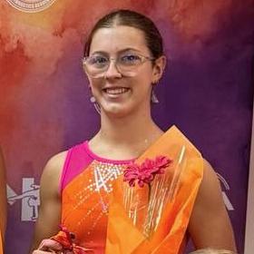
Melbourne Acrobatic Gymnastics Academy
Amelia Tabone (Melbourne Acrobatic Gymnastics Academy) recorded a DNF at Trial 1, competing only a partial event. At Senior Vics she returned to score 45.166, including vault 12.9 and floor 11.066. The championship performance, with apparatus points on the day, evidently gave her sufficient selection points. Another MAGA athlete making the most of the second chance a two-event selection window provides.
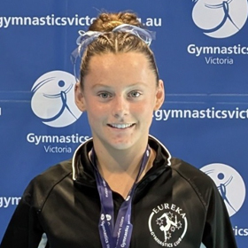
Eureka Gymnastics
Eloise Murphy (Eureka Gymnastics) had one of the stronger selection windows in the Level 9 field. She was 12th at Trial 1 (40.782), a challenging starting point. At Senior Vics she climbed to 11th at 45.849, including beam 12.250 and floor 11.966, a 5-point improvement between the two selection events, with that championship beam score generating serious apparatus points.
Lily Copland (Flyaway Gymnastics) was 9th at Trial 1 (43.616), with floor of 12.6 among the best in the field at that event. Floor specialists accumulate points, and 12.6 at a selection trial is exactly the kind of score the points system is designed to reward. She finished 15th at Senior Vics (43.682).
Lily Fletcher (CYC Gymsports) had a strong Senior Vics, finishing 6th in the Level 9 Open field at 47.032, vault 12.633 and floor 11.433. That championship performance would have been a significant points earner on vault in particular.
Nicole Muscroft (BTYC Gymnastics) completed only a partial event at Trial 1, scoring 21.533 (bars and beam only). She returned for Senior Vics and posted 46.866, vault 12.0, bars 11.466, beam 11.8, floor 11.6. Across a full competition she showed what she's capable of, and the championships score will have done much of the selection work.
Navy team: Abigail Alley (Athleta Gymnastics), Edie Thomas (Athleta Gymnastics), Matilda Ferrier (Knox Gymnastics).
Abigail Alley and Edie Thomas (both Athleta Gymnastics) form an Athleta pair in the Level 9 Navy. Alley's best result was 18th at Senior Vics (42.065); Thomas was 20th at Senior Vics (41.799) and 13th at Trial 1 (40.682). They're also teammates with State Team athlete Ella McGrath, making Athleta a club with serious depth across multiple competition levels right now.
Matilda Ferrier (Knox Gymnastics) was 16th at Senior Vics (43.265) with vault 12.766, a strong individual vault result on a selection event. Knox, a club that has been building its program steadily, lands a spot in the Level 9 Navy squad.
The MAGA story
Before getting into the club numbers, there's a story that deserves to be told on its own terms.
In November 2025, Funtastic Gymnastics closed suddenly. For the athletes and families involved, it was a shock, a program that had been part of their gymnastics lives simply stopped existing, and they had to find a new home and new facilities mid-season.
Melbourne Acrobatic Gymnastics Academy opened its doors and took them in at a time when they needed it most. And just six months later, MAGA has seven athletes named across the State Team and Border Challenge Team:
Border Challenge: Arianna Naidu, Elena van Eijk, Indigo Gration (all Level 7 White), Amelia Tabone (Level 9 White)
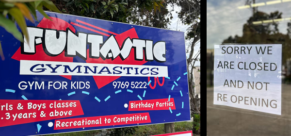
The club leaderboard
Counting every named athlete across both the State Team main squads and the Border Challenge main squads (not reserves, and not including the international squads or Level 10 Squad, whose final selections are made after training camp), YMCA Geelong leads the count:
Club
State Team
Border Challenge
Total
YMCA Geelong Gymnastics Club
5
3
8
Melbourne Acrobatic Gymnastics Academy
3
4
7
Waverley Gymnastics Centre
3
3
6
MLC Gymnastics
3
2
5
MYC Gymnastics
3
2
5
BTYC Gymnastics
1
3
4
Chamford Gymnastics Club
2
1
3
Jets Gymnastics
1
2
3
Athleta Gymnastics
1
2
3
CYC Gymsports
1
2
3
* Counts named athletes in State Team and Border Challenge main squads only. International squads and Level 10 Squad are excluded, as final selections within those squads are made after training camp.
YMCA Geelong's eight selections span five State Team squads plus three Border Challenge spots, and that's before counting their eight athletes across the international and Level 10 national squads (discussed below). MAGA's seven represent an injection of fresh talent into their program, with former Funtastic athletes boosting their standing across multiple levels. Waverley's six are spread across multiple competition tiers, with athletes in State Team, Level 7 and Level 9 Border Challenge. MLC and MYC each land five, with both clubs placing athletes across State and Border Challenge squads.
The international squads and Level 10: who might get the final call?
Final team selections for the international squads and the Level 10 nationals will be made after the state team training camp. We can't predict what the selectors will decide, and how athletes perform under the close scrutiny of coaches during camp can change things significantly, but we can look at what the data suggests heading in.
Senior International
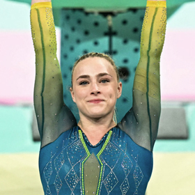
Waverley Gymnastics Centre
Waverley Gymnastics Centre dominates the Senior International Squad with six of the eight named athletes: Emily Whitehead, Romi Brown, Audrey Hawkins, Haylee Whitehead, Breanna Scott, and Miella Brown. The two non-Waverley athletes are Kiralee Blythe (Eclipse Gymnastics) and Kate McDonald (CYC Gymsports).
Emily Whitehead, an Australian Olympian, won the Senior International all-around at Senior Vics with 52.700, the highest score of the entire championships weekend across every level and every session.
Romi Brown posted 49.300 at Senior Vics. She is a decorated international competitor, winning a silver medal in the team event at the 2022 Commonwealth Games and representing Australia at the World Championships in Liverpool that same year.
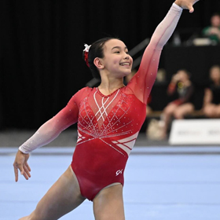
Waverley Gymnastics Centre
Audrey Hawkins posted 48.750 at Senior Vics and has already been named in Australia's squad for the Oceania Championships in 2026.
Breanna Scott is another athlete with major international experience, having been part of the silver medal-winning team at the 2022 Commonwealth Games and representing Australia at the 2024 Olympic Games.
Developing International
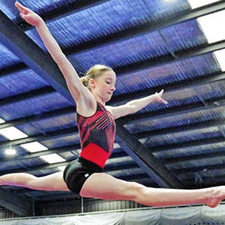
YMCA Geelong Gymnastics Club
Eleven athletes are named in the Developing International Squad: Gabriela Tse and Matilda Cleven (Melbourne Gymnastics Centre), Megan Kohler (CYC Gymsports), Neva Hunter (Waverley Gymnastics Centre), Olivia Meaney (YMCA Geelong), Ruby Kelly (Flyaway Gymnastics), Abigail Thom and Alice Johnson (Waverley), Alexandra Kusumah (Melbourne Gymnastics Centre), Alyssa Rantino (YMCA Geelong), and Chontelle Burgess (Athleta Gymnastics). Olivia Meaney won the Developing International division at Senior Vics with 49.700, the highest score in her division. Alyssa Rantino and Abigail Thom were separated by just 0.2 points at Senior Vics (45.300 and 45.500 respectively), and national selection within this squad could come down to similarly fine margins.
Future International
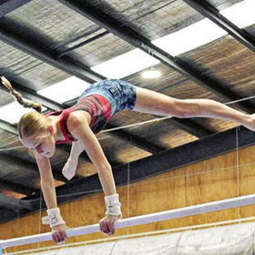
YMCA Geelong Gymnastics Club
Eight athletes are named in the Future International Squad: Cayla Liew, Farida Attia, Makaela Teo, Olivia Gheorghisor, and Paige Hum (all Waverley), Isabelle McDermott and Lucy Riddle (both YMCA Geelong), and Rebecca Hale (MLC Gymnastics). Lucy Riddle's progression through 2026 has been remarkable, posting 46.100 at Trial 1 in April, then winning the Future International division at Senior Vics just a month later with 50.350. That's a 4.25-point improvement in four weeks. If she can carry that form, she's a genuine candidate to earn selection when the final team is named after training camp.
Level 10 Squad
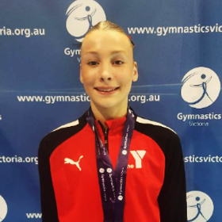
YMCA Geelong Gymnastics Club
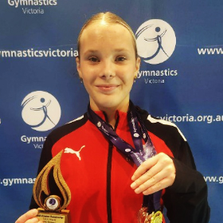
YMCA Geelong Gymnastics Club
Twenty-seven athletes are named in the Level 10 Squad, athletes who have hit the qualifying score at a competition during 2026 and earned a place in the national pool. Final team places are determined after the state team training camp. YMCA Geelong leads the squad with four athletes: Vivian Bayles (49.532 at Senior Vics), Mia Fewster (48.598, 6th in the Level 10 field), Maya Simanjuntak (46.933), and Isobel Vagg (49.865, 3rd in Level 10 Division 1, one of the higher scores of the entire championships weekend). Combined with Riddle and McDermott in the Future International squad and Meaney and Rantino in the Developing International squad, YMCA Geelong has eight athletes across three squad tiers, a depth of program that is genuinely remarkable for a regional club.
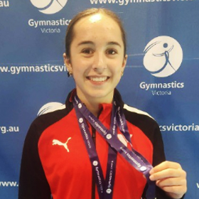
YMCA Geelong Gymnastics Club
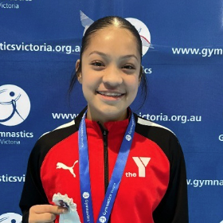
YMCA Geelong Gymnastics Club
Other standouts in the Level 10 Squad: Olina Karatzias (Waverley, 5th at Level 10 with 49.299), Natalie Groves (MYC Gymnastics, 8th with 48.132), Olivia Trembath (MYC Gymnastics, 10th with 47.998).
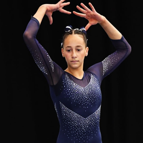
Niddrie Gymnastics
Miranda Mifsud (Niddrie Gymnastics) posted 46.099 at Trial 1 in the Level 10 field. The full 27-athlete squad also includes Maddie Smith and Jaella Koski (CYC Gymsports), Indianna Gilson (Eclipse Gymnastics), Keira Woon and Michaela Rodrigues (Waverley), Milla Wiseman, Sarah Lam, and Abigail De Fraga (Melbourne Gymnastics Centre), Megan Herrmann and Mikayla Drury (Knox Gymnastics), Georgia Brown (MLC Gymnastics), Emily Harris and Maleila Audino (Jets Gymnastics), Addison Tucker and Ebony Gough (MYC Gymnastics), Annabella Geraghty (BTYC Gymnastics), Clare Russell (Eastern Gymnastics Club), Zoe Rewell (CYC Gymsports), and April Poutet (Aerodynamix Gymnastics, 3 apparatus only).
What the numbers say to a gymnastics dad
After spending a few days with this data, a few things stand out. First: the selection system genuinely rewards more than just the all-around total. Sophie Strano (vault 13.0, floor 12.133 at trials), Elisha Spiteri (vault 13.166 and 13.3 across two events), Edwina Cross (beam 12.4 at Trial 2, second place at both trials), these athletes all built selection cases on top of their all-around scores. For a parent watching a younger gymnast develop, that's worth knowing. A "weak" event doesn't necessarily close the door if you're genuinely excellent at something else.
Second: the two-event window cuts both ways. Shae O'Brien's Trial 1 (43.133) looked discouraging. Her Senior Vics (49.282) was the best score in the session. Gabriella Da Costa was 11th at Trial 2 and first at Trial 1. The system creates room for athletes to have a difficult day and recover, something I find genuinely encouraging to watch.
And third: the MAGA story. Seven athletes representing Victoria, each one of them having navigated the disruption of a sudden club closure, settled into new facilities, and come out the other side with state team selections. Adapting to a new gym mid-season is no small thing. That's the Stick The Landing story I'll be thinking about most as the nationals and Border Challenge approach.
About the Author
David "Tonko" Tonkin
Founder, Stick The Landing · Gymnastics Dad
David Tonkin ("Tonko" to those who've known him long enough) is a former MAG gymnast turned Ballroom Dancer turned Gymnastics Dad. Gymnastics runs in the family: his mother coached and judged the sport, and his sister was a Rhythmic Gymnastics Australian Champion. Today his own daughter trains close to twenty hours a week in competitive WAG. He built Stick The Landing to give the Victorian gymnastics community the results tool it deserved.


 YMCA Geelong Gymnastics Club
YMCA Geelong Gymnastics Club Melbourne Acrobatic Gymnastics Academy
Melbourne Acrobatic Gymnastics Academy Waverley Gymnastics Centre
Waverley Gymnastics Centre MLC Gymnastics
MLC Gymnastics MYC Gymnastics
MYC Gymnastics BTYC Gymnastics
BTYC Gymnastics Chamford Gymnastics Club
Chamford Gymnastics Club Jets Gymnastics
Jets Gymnastics Athleta Gymnastics
Athleta Gymnastics CYC Gymsports
CYC Gymsports